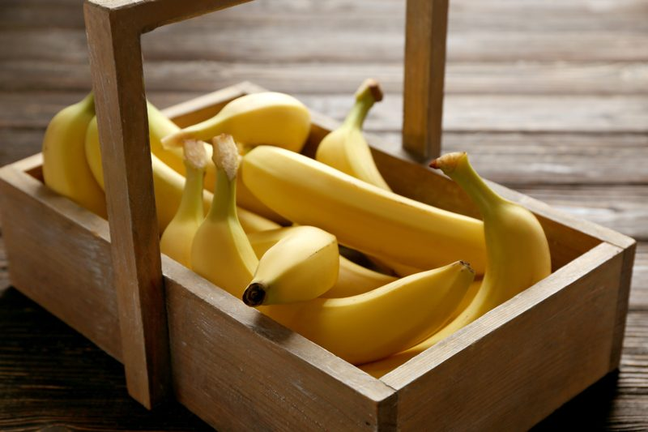
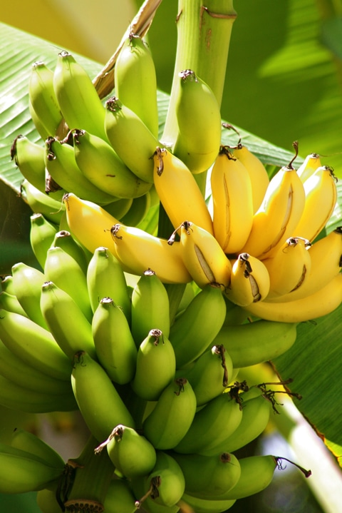

Bananas (fresh, dehydrated, frozen)
Bananas are creamy, rich, and sweet. They are a wonderful ingredient that can be used in many ways when it comes to creating raw recipes. You can count of them as a good source of both vitamins and minerals, as well as fiber.

Fresh Bananas
For starters, they are amazing in their fresh state. They come wrapped in their own convenient packaging and can be tossed in a knapsack for quick pick-me-up snack when you are on the go. And since they contain tryptophan (an amino acid that helps in preserving memory), you won’t be forgetting your knapsack when you head out that door. :)
They are on the low to medium side of the glycemic scale, this all depends on the level of ripeness. Unripe bananas consist mostly of starch and resistant starch, which acts like soluble fiber and escapes digestion.
As the banana ripens, the starch turns into sugar (glucose, fructose and sucrose). That is why the brown speckled bananas are much sweeter and may be more prone to spiking your insulin levels. The glycemic value of unripe bananas is about 30, while ripe bananas rank at about 51. (source).
It’s good to note that some people find unripened bananas difficult to digest. So, listen to the queues that your body gives you and decide which level of ripeness is best for you.
Dehydrated Bananas

Bananas are also great when dehydrated. They make for an even better snack when traveling because you don’t have to worry about it getting squished your knapsack or worry about it going bad.
Have you ever forgotten about a banana? (eep) Dried bananas can keep for months when properly stored. Another great way to use dehydrated bananas is in recipes that require a binder… helping to hold all the other ingredients together to give you structure for cookies and bars.
Learn how to dehydrate them (here). It’s important to remember that when dehydrated, the sugars are concentrated and it is easy to over-enjoy them if you know what I mean. It is also good to increase your water intake when consuming dried goods because it can be drying on the digestive system.
Did you know that you can dehydrate the skins, powder them, and use as a fertilizer? Learn more about that (here). Nothing has to go to waste.
Frozen Bananas
Frozen bananas create a delicious, super easy, and nutritious ice cream. No other ingredients needed. Just place frozen chunks of bananas into a high-powered blender or food processor and blend to a thick creamy texture that resembles soft-serve ice cream. If you are a smoothie lover, frozen bananas are perfect to drop in the blender to add creaminess, sweetness, and coldness to your drink.
When the bananas are ripe, remove the skins and place them on a baking sheet in a single layer. Slide into the freezer until frozen solid. At that point, remove and place in freezer-safe zip-lock bags and store back in the freezer. They will keep for 1-2 months. Frozen bananas do not thaw to well. They will become limp, brown, and slimy.
Fresh bananas can be enjoyed in many ways: peel and eat, dice and add to your morning cereals, granola, and porridges.
- Dried bananas are great for snacking but also add a great texture and flavor to raw granola.
- Frozen bananas create a wonderful quick and easy soft-serve ice cream and are perfect for smoothies.
- Natural, whole food sweetener. You can cut down the number of sweeteners added to your recipes but replacing all or some of it with ripe bananas. It’s important to ponder upon how the banana flavor might affect the end result of the recipe.
Selecting and Storing Bananas
Unlike many other fruits, fresh bananas are available year-round. They should be stored at room temperature. The warmer the temperature, the faster bananas will ripen. But if the house is cool and you wish to encourage faster ripening, place the banana in a brown paper bag at room temperature. However, to slow ripening, bananas can be refrigerated. The outer peel of the banana will darken but the banana itself will stay intact longer.
If you end up with too many ripe bananas that can’t be consumed for a few days, you can place them in the refrigerator. While their peel may darken, the flesh will not be affected but you will want to remove them from the refrigerator and allow them to come back to room temperature to get the best flavor from them.
© AmieSue.com